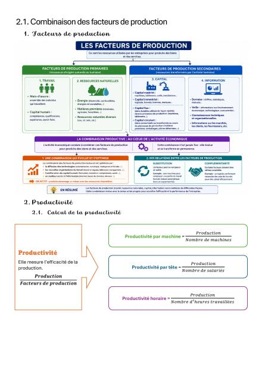
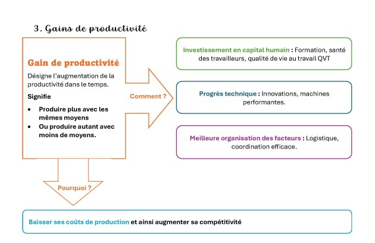

Thème 2 : Comment la richesse se crée-t-elle et se répartit-elle ?
contenu
menu
navigation
outils
Accueil
Module
Outils
Conclusion


Précédent
Suivant
Objectifs
2.1. La combinaison des facteurs de production
Introduction
Les facteurs de production et leurs caractéristiques
La productivité et les gains de productivité
Conclusion
2.2. La mesure de la production et ses prolongements
2.3. La dynamique de la répartition des revenus